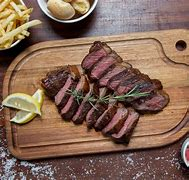

Churrasco
Ingredientes
- 1 kg de carne (picanha, maminha, fraldinha, etc.)
- Sal grosso a gosto
- Limão ou vinagre para temperar
- Farofa, arroz branco e vinagrete para acompanhar
Modo de Preparo
- Tempere a carne com sal grosso e deixe descansar por pelo menos 30 minutos.
- Acenda a churrasqueira e deixe o carvão queimar até formar uma brasa uniforme.
- Coloque a carne na grelha da churrasqueira e deixe assar, virando ocasionalmente, até atingir o ponto desejado (mal passada, ao ponto, bem passada).
- Retire a carne da churrasqueira e deixe descansar por alguns minutos antes de cortar.
- Sirva o churrasco acompanhado de farofa, arroz branco e vinagrete.
- Aproveite seu delicioso churrasco!